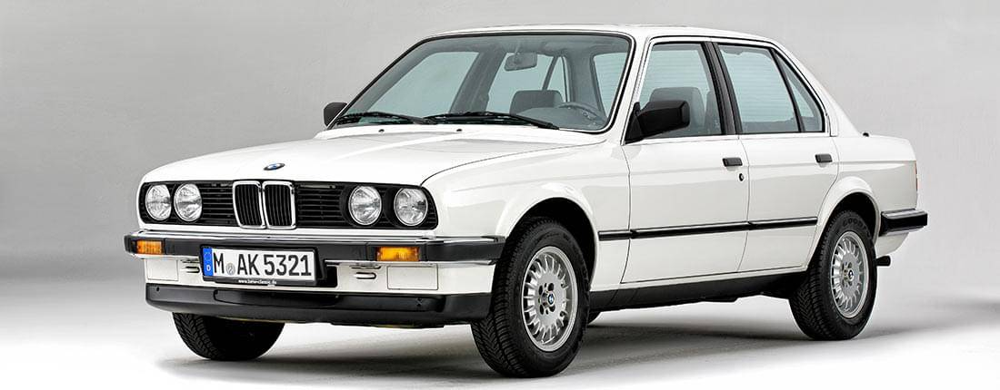
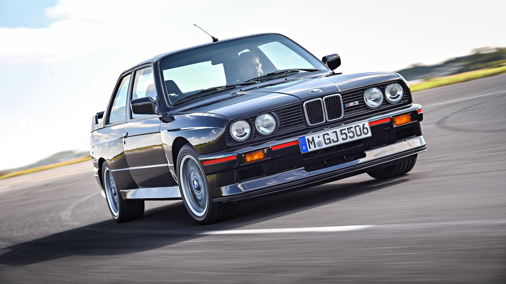

El BMW E30, lanzado en 1982, se convirtió en un ícono de los autos deportivos compactos gracias a su diseño innovador, su rendimiento en pista y su durabilidad. Fue producido hasta 1994 y sigue siendo uno de los modelos más admirados por los entusiastas de BMW.
| BMW E30 de serie | BMW E30 M3 |
|---|---|
|  |  |